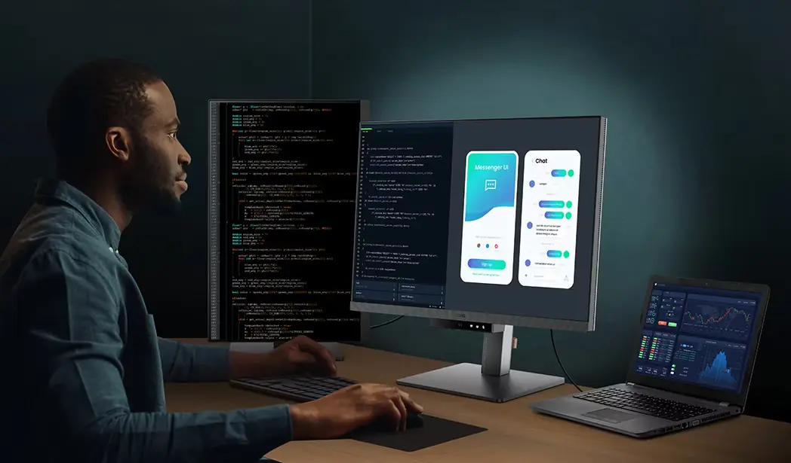

Development
Code editors, version control, APIs, and development utilities.
Explore a curated collection of development, design, productivity, collaboration, and learning tools that help professionals work smarter and faster.
Browse Tools
Code editors, version control, APIs, and development utilities.
UI, UX, graphic design, and content creation tools.
Task management, note-taking, and workflow organization.
Communication and teamwork platforms.
Educational resources and technical documentation.
Only trusted and widely used technology tools are included.
Quickly find tools that match your workflow and goals.
Review key information including platform support and pricing.